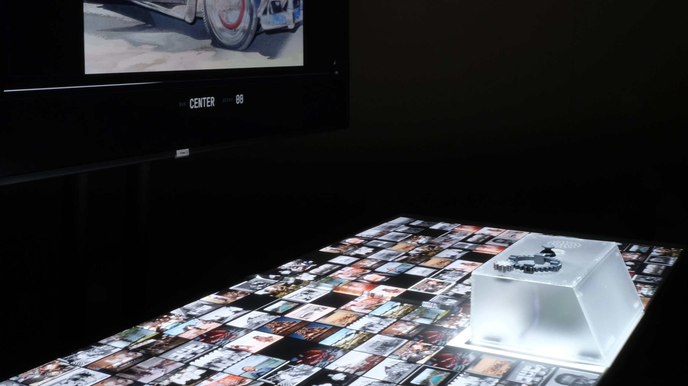

Permanence of Decay
What happens when digital data is forced to age and transform like real memories?
Permanence of Decay challenges our culture of infinite digital storage by treating data like a mortal, living thing. While computers normally act as permanent vaults, this installation introduces a finite lifespan to a photographic archive, causing images to age and break down over time. Through a physical console, visitors must actively engage with the system choosing whether to slow the decay or accelerate the loss of the files within it.
Why Data Must Decay
When you take a photo, it means something. When you delete it, it costs nothing. What if digital data decayed like things in nature?
This thesis imagines a future computer interaction where the storage device is no longer a silent vault, but a physical body that erodes alongside the data it holds. While the hardware remains, the data within it possesses a finite metabolism eventually fading until it is gone forever. By introducing biological constraints to a digital archive, the project shifts our relationship with technology from mindless consumption to an active, shared vulnerability.


Archive & Interaction
The archive begins with a collection of photographs from history with some significance and visitors are invited to contribute their own during the exhibition. By scanning a unique QR code on the display, the audience can upload images from their own devices directly into the grid. Instead of appearing instantly, each new upload materializes gradually, slowly emerging as if being absorbed into a physical ecosystem.
Once an image becomes part of the archive, its journey toward decay begins. Visitors interact with this process through a physical console featuring a prominent industrial rotary knob. Turning this knob allows users to directly manipulate the speed of the decay engine rotating it in one direction adds friction to slow down the degradation cycle, while turning it in the other actively accelerates the destruction. Releasing the knob causes the image to settle back into its default rate of decay. By putting the tempo of forgetting entirely in the visitor’s hands, the console transforms the knob into a tool for negotiating with digital entropy, turning the act of preservation or destruction into a deliberate, physical choice.
The Aesthetic of Decay
As the images break down, the harsh, mathematical structure of the JPG compression algorithm is superimposed with the organic, unpredictable way photographic film reacts to light.
The files do not simply lose quality or pixelate; instead, they develop a distinct digital grain. Because the system analyzes the specific properties of each file, every image goes through this decay in a entirely unique way, guided entirely by the colors and composition it is made up of.
This blending of algorithmic artifacts and individual image data transforms cold, sterile computer compression into a visual degradation that feels deeply tactile, fragile, and alive.